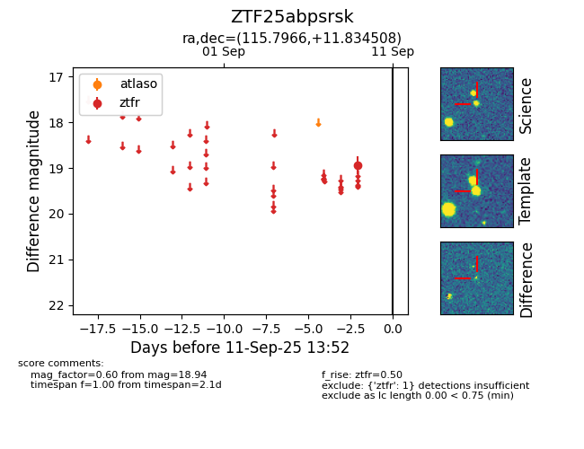

FINK: ZTF25abpsrsk
Lasair: ZTF25abpsrsk
ALeRCE: ZTF25abpsrsk
ZTF25abpsrsk (ztf,fink)
equatorial (ra, dec) = (115.7966,+11.83451)
galactic (l, b) = (207.9825,+16.77013)

last ztfr=18.94
1 ztfr detections